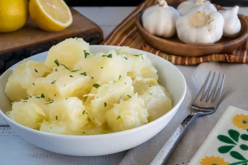

Recipie for Yuca con Mojo

Description
Yuca con mojo is a traditional Cuban dish that features yuca, also known
as cassava, served with a zesty garlic and citrus sauce called mojo. Yuca,
a starchy root vegetable, is cooked until tender and then marinated in a
tangy blend of fresh lime juice, minced garlic, extra virgin olive oil,
and aromatic spices like cumin. The mojo sauce adds a burst of flavor,
enhancing the natural taste of the yuca. The dish is often garnished with
fresh herbs like cilantro or parsley, adding a vibrant touch. Yuca con
mojo is a popular side dish or appetizer, offering a delightful
combination of textures and a bright, refreshing taste that complements a
variety of main dishes.
Ingredients
- 2 pounds (900 grams) yuca (cassava)
- 4 cloves garlic, minced
- 1/2 cup fresh lime juice
- 1/4 cup extra virgin olive oil
- 1 teaspoon salt
- 1/2 teaspoon ground cumin
- 1/4 teaspoon black pepper
- Fresh cilantro or parsley leaves for garnish (optional)
Steps
- Peel the yuca and cut it into approximately 2-inch (5 cm) pieces.
Remove any woody fibers from the center. Rinse the yuca pieces under
cold water to remove any dirt or debris.
- Place the yuca in a large pot and add enough water to cover it.
Bring the water to a boil over high heat and cook the yuca until
it becomes tender, about 20-30 minutes. Test for doneness by inserting
a fork into the yuca pieces - they should be easily pierced. Drain the
cooked yuca and set it aside.
- In a small saucepan, combine the minced garlic, fresh lime juice, extra
virgin olive oil, salt, ground cumin, and black pepper. Heat the mixture
over low heat for a few minutes until the garlic is fragrant and the flavors
are well combined. Remove the saucepan from the heat.
- Place the cooked yuca in a serving dish or platter. Pour the prepared mojo
sauce over the yuca, ensuring all the pieces are well coated. Allow the yuca
to marinate in the mojo sauce for at least 15 minutes, or longer if desired,
to enhance the flavors.
- Optional: Garnish the yuca con mojo with fresh cilantro or parsley leaves for
added freshness and presentation.